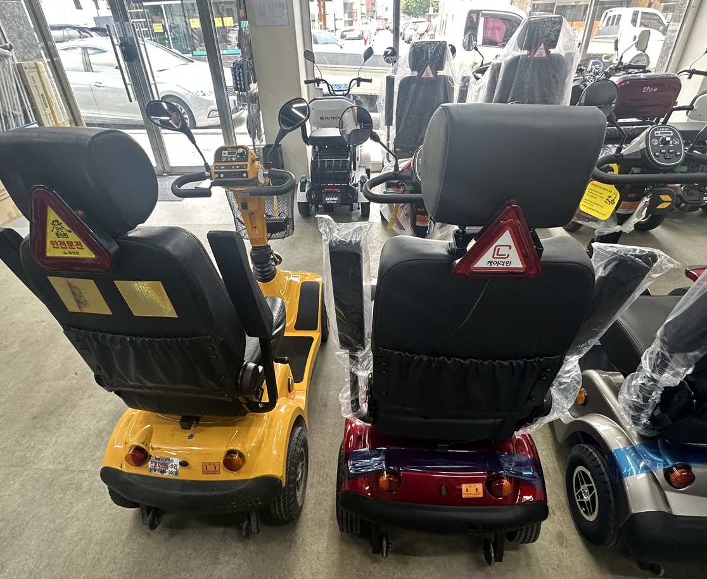
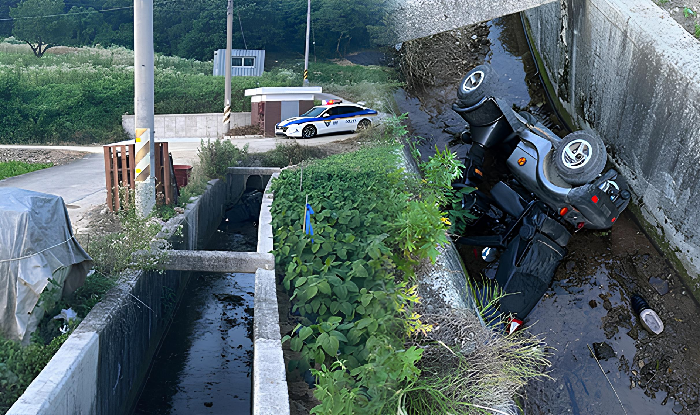
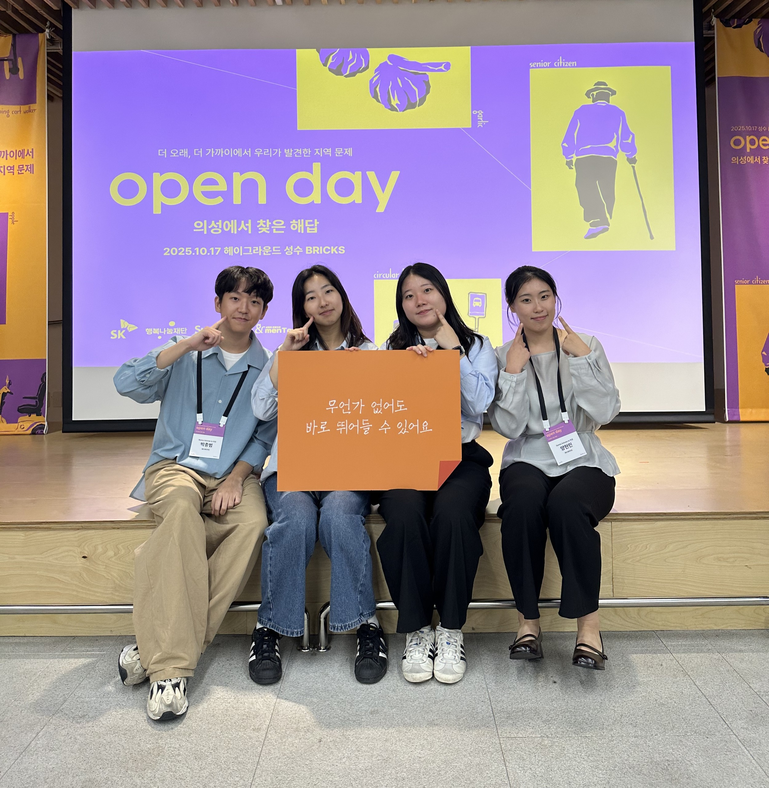
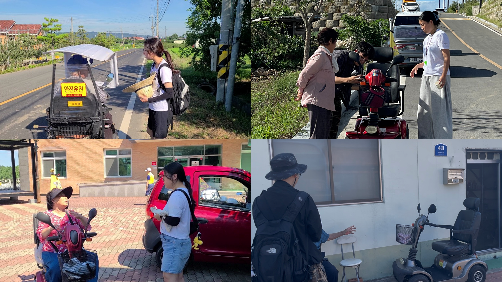

처음 의성으로 가는 길은 낯설고 멀었다. 지도 위 거리보다 '마음의 거리'가 더 멀었다. 우리는 지역을 '소멸', '고령화', '지방 불균형' 같은 단어로만 알고 있었다.
그러나 실제로 도착해 보니 그 단어들은 너무 추상적이었다. 풍경은 느리고 사람들의 걸음은 조용했지만, 다들 자기 하루를 살아가고 있었다. 의성은 여전히 누군가의 삶이 이어지는 곳이었다. 한낮의 뜨거운 바람, 골목 어귀의 웃음소리, 복지관 마당의 분주한 움직임. 통계 속 '지역'에는 누군가의 하루와 밥상과 인사가 있었다.
'자세히 보아야 예쁘다'는 말은 의성을 두고 하는 말 같았다. 처음엔 낡아 보였던 간판도, 멈춘 듯했던 거리도 지내다 보니 사람 냄새 나는 풍경이 되었다. 익숙하지 않다는 이유로 '정체된 곳'이라 생각했지만, 그곳 사람들은 자기 속도로 살아가고 있었다. 도시에서는 앞만 보고 다녔는데, 이곳에서는 한 번씩 서서 주위를 보게 됐다. 지역을 살펴보러 갔다가, 사람이 살아간다는 게 무엇인지 배우고 왔다.





의성에서는 시간이 다르게 흘렀다. 아침이면 마을 방송이 울리고, 낮에는 트럭이 지나갈 때마다 먼지가 일었다가 금세 가라앉았다. 해 질 녘이면 밭둑을 따라 천천히 전동스쿠터가 줄지어 돌아오고, 골목마다 저녁밥 짓는 냄새가 퍼졌다. 그곳에서의 하루는 도시의 하루보다 두 배쯤 길게 느껴졌다.
그 느림은 나이 든 사람들이 여전히 하루를 살아내는 속도였다. 길을 걷는 사람의 열 명 중 아홉은 노인이었고, 그들이 타는 전동스쿠터가 이 마을의 기본 교통수단이었다. 그들의 움직임에는 어떤 당당함이 있었다.
의성의 마을들은 젊은 세대가 떠나며 점점 고요해졌다. 학교는 폐교가 되었고, 집들은 문이 잠겼다. 남은 사람들은 서로의 이름을 다 알지만, 그만큼 이별에도 익숙했다. 의성의 초고령화는 조용한 익숙함 속의 고립이기도 했다. 그래도 어르신들은 여전히 함께 지냈다. 복지관에서 밥을 같이 먹고, 무더운 여름이면 그늘 아래 모여 수박을 나눴다. 그 모습은 작은 공동체의 연대였다. 노인이 많다는 사실보다, 그 삶을 존중하지 않는 시선이 더 무거운 문제였다. 의성은 여전히 사람들이 살아가는 곳이었다.
의성의 노인들은 지역을 끝까지 지키는 마지막 세대였다. 우리가 만난 오조작 사고는 '노인'이라는 이름으로 오래 방치돼 온 위험이기도 했다. 그들의 이동을 '권리'로 바라보는 사람이 드물었고, 이 위험을 들여다본 사람도 그만큼 드물었다.
의성에서 우리는 자주 걸음을 멈췄다. 처음엔 그 느림이 낯설었지만 곧 익숙해졌다. 도시로 돌아오자 모든 것이 다시 빠르게 돌아갔다. 버스, 광고, 회의, 시간표. 모두 속도와 경쟁으로 채워져 있었다. 그 속에서 우리는 문득 물었다. "우리는 왜 이렇게 바쁘게 살아가고 있나?"
우리 사회의 '표준 속도'는 청년 중심으로 설계되어 있다. 걷는 속도, 반응 속도, 정보 처리 속도까지 '젊음'을 기준으로 만들어졌다. 그러나 고령층에게 그 속도는 위험이 되었다. 의료용 전동스쿠터 사고의 밑바닥에는 어르신들의 느린 속도를 고려하지 않은 설계가 있었다. 노인의 느림은 종종 '답답함'으로 오해받고, 실수는 '노화'로 치부된다. 그 이면에는 노인의 시간을 받아들이지 못하는 사회의 불관용이 있었다. 의성의 느림은 삶을 천천히 음미하고 서로를 바라볼 수 있는 속도였다. 서로 다른 속도를 인정해야 같이 살 수 있다는 것을 우리는 의성에서 배웠다.
의료용 전동스쿠터는 어르신들의 삶을 지탱하는 또 하나의 다리였다. 하지만 그 다리는 여전히 위험했다. 우리가 개발한 여러 장치와 실험은 작은 출발이었다. 장치로 막을 수 있는 사고가 있었고, 사람들의 공감이 있어야 풀리는 문제가 있었다.
우리는 한계를 인정했다. 프로토타입은 완벽하지 않았고, 실험은 여전히 진행 중이다. 그래도 가야 할 방향은 정해졌다. 어르신이 안심하고 탈 수 있는 장치를 만드는 것이다.
연구가 끝난 지금, 가장 오래 남는 건 현장에서 들었던 목소리다. 어르신들의 두려움과 바람, 그리고 우리의 무력감. 그 기억이 다음 단계로 이어 갈 이유다.
이 연구가 남긴 가장 큰 교훈은 기술보다 마음이 먼저여야 한다는 것이다. 사람을 이해해야 쓸모 있는 기술을 만들 수 있다. 우리가 만든 건 지역과 세대, 제도 사이를 잇는 가능성의 증거였다.
우리가 만든 건 지역과 세대, 제도 사이를 잇는 가능성의 증거였다.
우리는 의성에서 그 이해를 시작했다. 이 이해가 언젠가 또 다른 지역, 또 다른 세대의 안전으로 이어지기를 바란다.